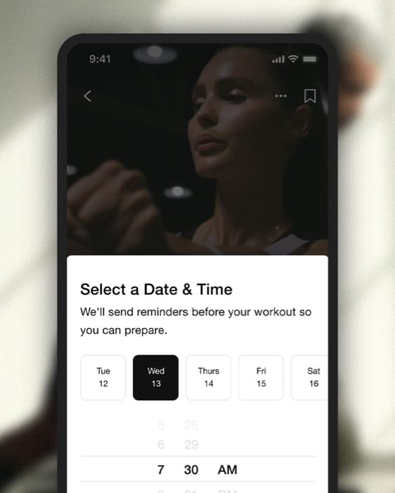
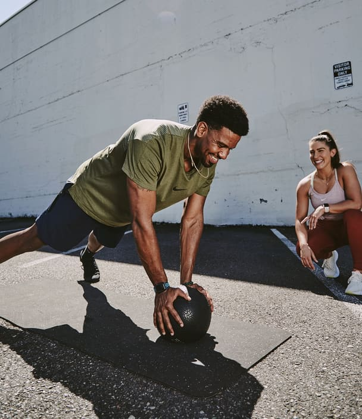

Nike richiede di accettare i cookie per scopi legati a
prestazioni, social media e annunci pubblicitari. I
cookie di terze parti per social media e a scopo
pubblicitario vengono utilizzati per offrire funzionalità
social e annunci pubblicitari personalizzati. Per
ulteriori informazioni o per modificare le tue
preferenze, clicca "Ulteriori informazioni" oppure visita
"Impostazioni dei cookie" in fondo alla pagina
Web. Per ulteriori informazioni relative ai cookie e
all'elaborazione dei tuoi dati personali, consulta
l'Informativa sulla privacy e sui cookie. Accetti i cookie
e l'elaborazione dei dati personali interessati?
Puoi sempre modificare le tue preferenze accedendo alla
sezione "Impostazioni dei cookie" in fondo alla pagina. Per i
dettagli completi, consulta l'Informativa sulla privacy e sui
cookie.
Raggiungi i tuoi obiettivi di
fitness con l'app Nike
Training Club (NTC). Con più
di 200 programmi di allenamento gratuiti e mirati, l'app Nike
Training Club ti
seguirà passo dopo passo. Dai corsi di
yoga agli esercizi con o
senza
attrezzatura, troverai il workout giusto per te. Segui i nostri Nike
Master Trainer
nei tanti corsi disponibili, della durata che varia dai 5 ai 50
minuti. Allenati a
casa, in palestra o all'aperto, quando e dove vuoi. Inoltre, non
perderti la nostra
raccolta di video gratuita in costante crescita. Non importa il tuo
livello di
allenamento: l'app NTC ti offrirà gli strumenti giusti per muoverti
e restare in
forma.
Gli allenamenti da casa, come non li hai mai visti. Con NTC, puoi
muoverti, dare
il massimo e diventare più forte comodamente dal tuo salotto. Allenati
con NTC
Live ed esplora la nostra raccolta di allenamenti gratuiti, con i
consigli degli
esperti. Inoltre, entrerai a far parte di una vasta community di
atleti come te.
L'app che ti segue in palestra
Se ti piace allenarti in palestra, ti serve un'app che ti metta
costantemente alla
prova. Grazie ai tanti piani di allenamento disponibili e ai consigli
degli esperti,
puoi lavorare sulla tua forma fisica e sulla tua forza. Con l'app Nike
Training
Club hai a disposizione ore di workout, dal cardio al
sollevamento pesi, con la
possibilità di sfruttare le macchine e le attrezzature da palestra.
Non è solo
un'app per allenarsi: è il tuo nuovo personal trainer Nike.
Perché scegliere Nike Training Club?
Con l'app Nike per l'allenamento puoi continuare a spingerti oltre i
tuoi limiti.
Che tu sia solo agli inizi o che tu voglia alzare il livello del tuo
allenamento, NTC
ti aiuterà a raggiungere il tuo obiettivo.

Pianifica i tuoi workout:
Usa il planner di workout dell'app (al momento
disponibile solo per iOS) per organizzare il tuo
programma di allenamento ideale. Dalle singole
sessioni a schede plurisettimanali, puoi
personalizzare il tuo allenamento in base al tuo stile
di vita.
È ora di allenarsi:
L'app Nike Training Club offre molti video per aiutarti
ad allenarti. I nostri Master Trainer ti aiuteranno a
mantenere la concentrazione e a perfezionare la tua
forma fisica. Puoi scegliere di focalizzarti su un
particolare gruppo muscolare o lavorare per
migliorare resistenza, mobilità o forza. Sta a te
scegliere!
Monitora i progressi:
Celebra il tuo duro lavoro con trofei e traguardi. La
scheda Attività registra i tuoi risultati, per aiutarti a
mantenere la motivazione e allenarti regolarmente.
Programmi di allenamento su misura
Inizia ad allenarti con la guida di un programma personalizzato che si
adatta ai
tuoi progressi, ai tuoi impegni e alle altre attività. Con l'app Nike
Training Club
hai accesso a piani di allenamento da 4-6 settimane. In palestra o da
casa, ti
aspettano programmi perfetti per te e i tuoi impegni.
I nostri piani multisettimanali non ti guidano solo attraverso i
workout, ma
includono anche consigli sul benessere e sulla nutrizione.* A
prescindere dal
tuo livello, troverai tutto ciò che ti serve per migliorare il tuo
fitness e rispettare
la tabella di marcia. Ogni programma è stato pensato per ottenere
specifici
risultati, quindi se vuoi diventare più forte, dimagrire o aumentare
la tua
resistenza, sai cosa aspettarti. Allenati con NTC a casa o usala come
app per
l'allenamento con i pesi in palestra per sfruttare al massimo
l'attrezzatura a tua
disposizione.
*Al momento questa funzionalità è disponibile solo nel Regno Unito, ma
potrebbe essere estesa ad altri Paesi.
Allenati come vuoi
Potenzia la tua routine di fitness con la nostra raccolta di
allenamenti in
continua espansione, guidata dai nostri Master Trainer di livello
mondiale. Con
Nike Training Club hai accesso a più di 200 workout gratuiti di forza,
resistenza,
yoga e mobilità, pensati per allenare addominali, braccia, spalle,
glutei e
gambe. Le sessioni durano da 5 a 50 minuti e sono create appositamente
per
farti ottenere dei risultati.
Yoga
Migliora le tue tradizionali
sequenze yoga con un tocco
Nike. Se vuoi migliorare la
stabilità, la flessibilità e la forza,
fare yoga tutti i giorni è il modo
perfetto per realizzare i tuoi
obiettivi. Inoltre, se hai terminato
una sessione di allenamento
particolarmente dura, regalarti un
po' di tempo sul tappetino ti
aiuterà a recuperare più
velocemente. Non importa se sei
alle prime armi o pratichi yoga già
da tempo: sull'app Nike Training
Club troverai sessioni di yoga
adatte a te. Aumenta la forza e
l'agilità con le nostre lezioni di
yoga vinyasa, inizia la tua
giornata nel modo giusto con un
energizzante Morning Flow o
aumenta la frequenza cardiaca
con una sessione Energy Flow.
Non ti serve nessuna
attrezzatura: basta il tappetino.
Cardio e HIIT
Aumenta la resistenza con
esercizi ad alta intensità,
kickboxing e altro ancora. Dalle
sessioni HIIT di 10 minuti alla
nostra sessione Cardio Intervals
& Core, su NTC troverai un mix di
allenamenti intensi. Alcuni trainer
utilizzano delle attrezzature base
nelle loro lezioni, quindi è bene
dare un'occhiata al video prima di
iniziare. Ma se non hai le fasce di
resistenza o i manubri, non
preoccuparti: ci sono tantissime
sessioni senza attrezzatura che ti
faranno sentire i muscoli in
fiamme. L'allenamento a intervalli
è un modo efficiente per
migliorare la tua forma fisica e
bruciare calorie. E con la vasta
raccolta di video dell'app Nike
Training Club, non ti annoierai
mai.

Allenamento di forza
Mettiti alla prova con sessioni di
allenamento di forza mirate per
braccia, core e glutei. Che si tratti
del nostro Quick Core Crush di
10 minuti o di un video sul
rafforzamento della parte
superiore del corpo, i nostri
allenamenti ti faranno superare i
tuoi limiti. E quando vuoi
concentrarti su forza,
preparazione fisica e potenza
generale, dai un'occhiata alle
nostre sessioni full body. Se
desideri aumentare la massa
muscolare, segui le nostre
sessioni quando vai in palestra.
Oppure prova le lezioni senza
attrezzatura comodamente da
casa.
Mobilità
Migliora la qualità e la flessibilità
dei movimenti con sessioni di
recupero attivo. I nostri
allenamenti di mobilità sono
pensati per offrire un migliore
controllo dei movimenti, una
maggiore stabilità e una più
ampia gamma di movimento. Hai
poco tempo a disposizione?
Nessun problema: puoi lavorare
sulla tua mobilità in meno di 10
minuti con NTC. Il nostro Runner
Cool Down di 9 minuti è l'ideale
dopo aver corso per strade o
sentieri, mentre il nostro Simple
Morning Energy Flow di 9 minuti
ti aiuterà a rigenerarti. Se il tuo
obiettivo è rilassarti e rinvigorirti,
prova il nostro Deep Restorative
Yoga di 35 minuti.
Yoga
Migliora le tue tradizionali
sequenze yoga con un tocco
Nike. Se vuoi migliorare la
stabilità, la flessibilità e la forza,
fare yoga tutti i giorni è il modo
perfetto per realizzare i tuoi
obiettivi. Inoltre, se hai terminato
una sessione di allenamento
particolarmente dura, regalarti un
po' di tempo sul tappetino ti
aiuterà a recuperare più
velocemente. Non importa se sei
alle prime armi o pratichi yoga già
da tempo: sull'app Nike Training
Club troverai sessioni di yoga
adatte a te. Aumenta la forza e
l'agilità con le nostre lezioni di
yoga vinyasa, inizia la tua
giornata nel modo giusto con un
energizzante Morning Flow o
aumenta la frequenza cardiaca
con una sessione Energy Flow.
Non ti serve nessuna
attrezzatura: basta il tappetino.
Cardio e HIIT
Aumenta la resistenza con
esercizi ad alta intensità,
kickboxing e altro ancora. Dalle
sessioni HIIT di 10 minuti alla
nostra sessione Cardio Intervals
& Core, su NTC troverai un mix di
allenamenti intensi. Alcuni trainer
utilizzano delle attrezzature base
nelle loro lezioni, quindi è bene
dare un'occhiata al video prima di
iniziare. Ma se non hai le fasce di
resistenza o i manubri, non
preoccuparti: ci sono tantissime
sessioni senza attrezzatura che ti
faranno sentire i muscoli in
fiamme. L'allenamento a intervalli
è un modo efficiente per
migliorare la tua forma fisica e
bruciare calorie. E con la vasta
raccolta di video dell'app Nike
Training Club, non ti annoierai
mai.
Allenamento di forza
Mettiti alla prova con sessioni di
allenamento di forza mirate per
braccia, core e glutei. Che si tratti
del nostro Quick Core Crush di
10 minuti o di un video sul
rafforzamento della parte
superiore del corpo, i nostri
allenamenti ti faranno superare i
tuoi limiti. E quando vuoi
concentrarti su forza,
preparazione fisica e potenza
generale, dai un'occhiata alle
nostre sessioni full body. Se
desideri aumentare la massa
muscolare, segui le nostre
sessioni quando vai in palestra.
Oppure prova le lezioni senza
attrezzatura comodamente da
casa.
Mobilità
Migliora la qualità e la flessibilità
dei movimenti con sessioni di
recupero attivo. I nostri
allenamenti di mobilità sono
pensati per offrire un migliore
controllo dei movimenti, una
maggiore stabilità e una più
ampia gamma di movimento. Hai
poco tempo a disposizione?
Nessun problema: puoi lavorare
sulla tua mobilità in meno di 10
minuti con NTC. Il nostro Runner
Cool Down di 9 minuti è l'ideale
dopo aver corso per strade o
sentieri, mentre il nostro Simple
Morning Energy Flow di 9 minuti
ti aiuterà a rigenerarti. Se il tuo
obiettivo è rilassarti e rinvigorirti,
prova il nostro Deep Restorative
Yoga di 35 minuti.
Sfrutta al massimo i tuoi workout sull'app Nike
Training Club
Integra altre app
Vuoi condividere le tue
corse e i tuoi allenamenti tra
le tue app Nike Run Club e
Nike Training Club? Collegarle è facile. Basta seguire questi
passaggi:
● apri il tuo profilo in una delle app;
● seleziona "Impostazioni";
● seleziona "Partner";
● seleziona "Nike Run Club" o "Nike Training Club", in base all'app
che vuoi collegare.
Utilizza più dispositivi
Il nostro obiettivo è semplificarti la vita. Ecco perché puoi seguire
i programmi,
monitorare i tuoi allenamenti e consultare i consigli degli esperti
(ad esempio su
mindfulness, nutrizione, recupero o sonno) su più dispositivi.
iOS
Usa Nike Training Club sul tuo iPhone, iPad o iPod Touch per cercare
gli
allenamenti e raggiungere i tuoi obiettivi.
Android
Nike Training Club è disponibile anche per smartphone e tablet Android
per
permetterti di portare l'app ovunque.
Apple Watch
NTC per Apple Watch ti consente di consultare facilmente il tempo o le
ripetizioni durante l'allenamento.
Le recensioni di Nike Training Club
Atleti soddisfatti
"Ho seguito il programma Gym Strong di 8 settimane a casa ed è stato
fantastico! Anche se disponevo di un'attrezzatura limitata (ho usato i
manubri,
una slam ball e una barra per trazioni), gli allenamenti sono
abbastanza
diversificati e non diventano ripetitivi, quindi rimangono divertenti
e interessanti.
Considerando che l'app è gratuita, è altrettanto valida di altre che
costano circa
10 £ al mese. L'app è molto semplice da usare ed è facile visualizzare
il tuo
programma di allenamento per giorno, per settimana o per 8 settimane.
Il
programma ha mantenuto la mia motivazione e la mia forma durante il
lockdown."
"Questa app è la migliore che abbia trovato per gli allenamenti a
casa.
Consente di creare un programma giornaliero personalizzato in base ad
altezza, peso e obiettivi di fitness. Puoi lasciare un feedback
indicando il livello
di difficoltà provato durante il programma, in modo da poter scegliere
tra
allenamenti più personalizzati. Puoi anche ascoltare la tua musica
tramite l'app
durante l'allenamento. Ma soprattutto, è gratis."
"Se hai appena iniziato o sei a un livello intermedio (perfino
avanzato) non c'è
niente di meglio. Uso questa app da febbraio di quest'anno dopo aver
ricevuto
un nuovo smartphone e non avrei potuto chiedere un regalo migliore. È
fantastico poter disporre di conoscenze e aiuto GRATIS.
I programmi "I primi passi", "Bodyweight" e "Forma fisica" SONO I
MIGLIORI.
Sono una combinazione di cardio e sviluppo muscolare e attenzione a
come e
con che efficacia riesci a tenerti in forma man mano che avanzi con il
programma allenandoti con l'intero pacchetto. Consiglio questa app a
chiunque
abbia bisogno di aiuto per iniziare e mantenere la motivazione. È
molto utile.
Almeno lo è stata per me! Grazie NIKE."
Celebra i tuoi traguardi
Ottieni medaglie e trofei per occasioni speciali come compleanni,
Capodanno e
Halloween o per traguardi sportivi come il completamento dei workout,
la
frequenza dell'allenamento o le serie settimanali e mensili.
Nike Training Club: iscriviti oggi
Pronti, ai posti, via: effettua il download dell'app Nike Training
Club e crea un
account. Poi inizia a esplorare i nostri workout e a monitorare il tuo
viaggio nel
fitness. Scarica subito NTC per
iOS e
Android.